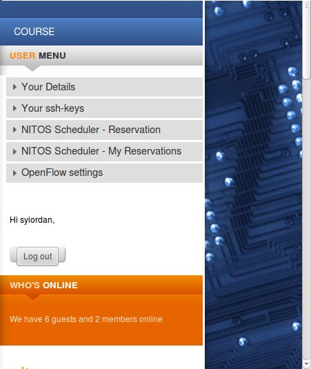
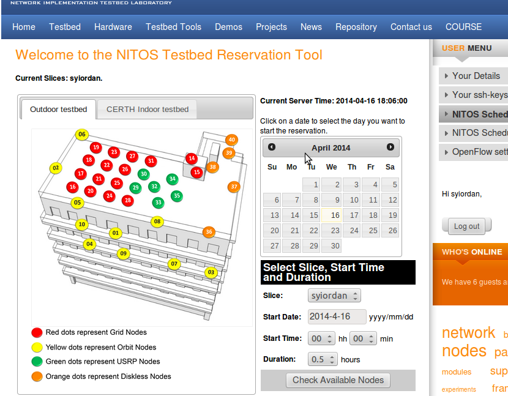

All access to NITOS resources occurs through the “slice” abstraction.
The NITlab Administrator is in charge of managing your slice. You will need to contact him directly and ask him/her to either create a new slice for you, or add your user account to an existing slice.Once your account has been associated to a slice, you will be able to view the Reservation page and the “Your ssh-keys” page, at the User Menu on the right of the NITlab’s webpage.
You can then go to the Reservation page and reserve nodes and frequencies for a given interval.
Slice names typically coincide with your NITlab webpage’s account username. For example if your username is “syiordan”, then your slice’s name will probably be “syiordan”. In the following topics, we will assume that your slice is named username. You should replace this value with your slice’s actual name whenever you encounter it.